An Unforgettable Trip To A True Dreamy City
By Huy Quang Vũ | 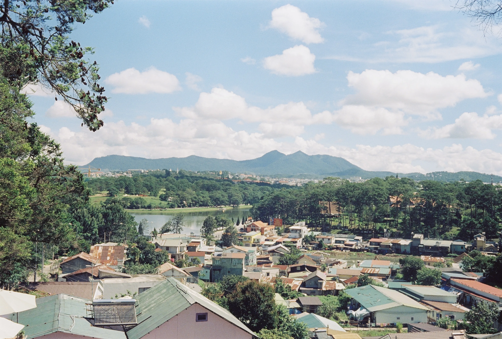I wish I stayed here longer.
- I told to myself
Many people find it easy to hop from one city to another without much hesitation. However, for me, a myriad of seemingly trivial reasons (such as it being too cold, too far away, or too rainy) had kept me from visiting Da Lat city for my entire life. But finally, I had the chance to experience it, and it's difficult to encapsulate the wonder of this city in just a single word.
From its people to its natural beauty, Da Lat is truly exceptional. Here, despite falling ill on the first day due to the temperature difference, I ultimately discovered the inner peace I had been seeking for a long time.
How can a relatively small, chilly city have such a profound impact on a person's well-being? Let's delve into it and explore!
People
Delicate, simple, and energetic – these words perfectly encapsulate the essence of the local vibes in Da Lat.
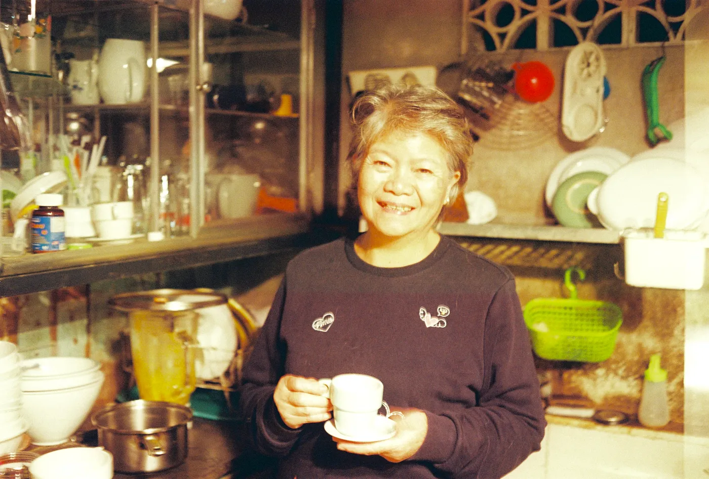The lady featured in the photo is Mrs. Xuan Nam, who runs a small kitchen where she personally prepares and serves food. Her kitchen operates exclusively by reservation, and I had the privilege of reserving a spot there on two occasions. Why did I make these reservations? It's because I have a genuine fondness for engaging in conversations with local residents who possess intimate knowledge of their city and its daily life.
What sets her kitchen apart is the special touch it offers: her husband, Mr. Duc, is a skilled and accomplished pianist. As she cooks, he serenades with beautiful piano melodies. The combination of their talents creates a truly delightful and unique dining experience.
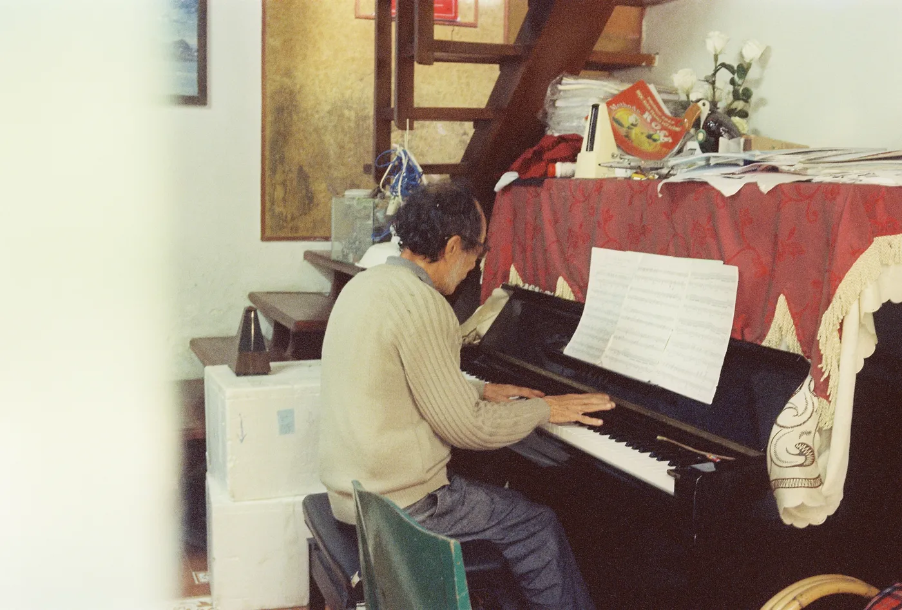I dedicated an entire hour to engaging in a conversation solely about music with Mr. Duc, particularly delving into the history and sharing tips and tricks related to music. Interestingly, despite having studied engineering, his passion for the piano runs deep, and it serves as a means to balance his life. Furthermore, he holds a special affection for the compositions of Chopin. I distinctly recall the sparkle in his eyes as he passionately discussed the nuances and distinctions between Chopin's and Beethoven's music. Our conversation came to a close when his wife called me over to enjoy the meal she had lovingly prepared.
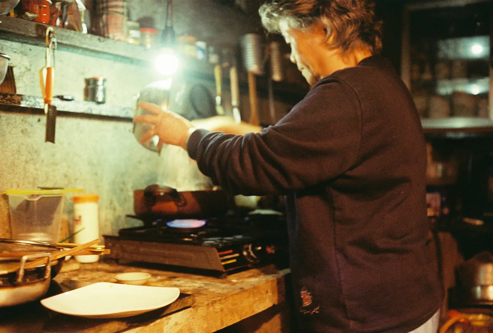Before I reveal the meal, I'd like to shed light on Mrs. Nam's cooking and serving approach. Following the confirmation of my reservation, she would make a trip to the local market to source fresh beef, fresh fruits, and fresh vegetables. This commitment to freshness not only imparts an organic quality to the meal but also ensures it's a healthy choice, particularly important during a trip when dining out is the norm.
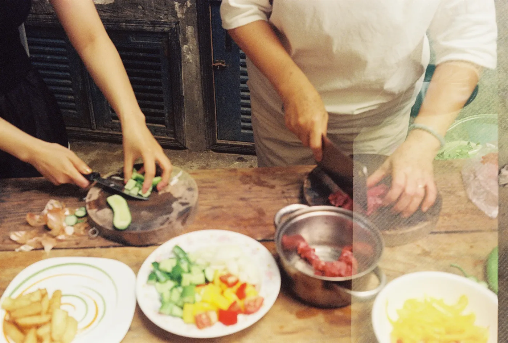While preparing the meal, Mrs. Nam would often invite me and others to join her in the kitchen. Participating in the meal preparation was a unique and enriching experience. It felt like she was not only creating a delicious meal but also fostering a sense of togetherness and shared moments. Her warm approach conveyed a sense of striving to enhance the quality of life for everyone who had the pleasure of dining at her kitchen.
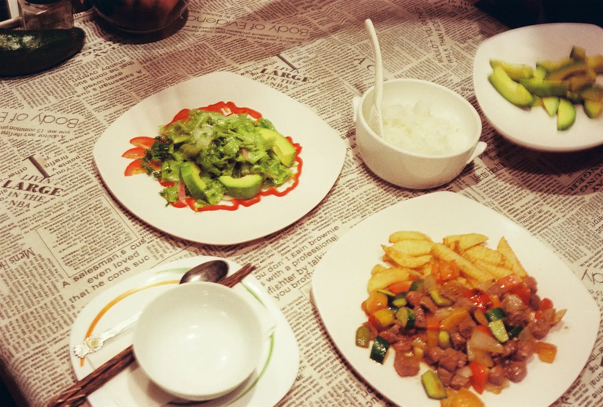While enjoying my meal, I had the opportunity to engage in conversations with the other individuals seated around the table. Among them, one person left a lasting impression on me: a woman born in rural Hanoi but residing in Da Lat for over a decade. She shared insights about her career, life experiences, and her perspective on various matters. In addition, she inquired about my tourism business and generously connected me with her friends working in the tourism industry in Da Lat. Her willingness to assist and offer recommendations was truly gracious and appreciated.
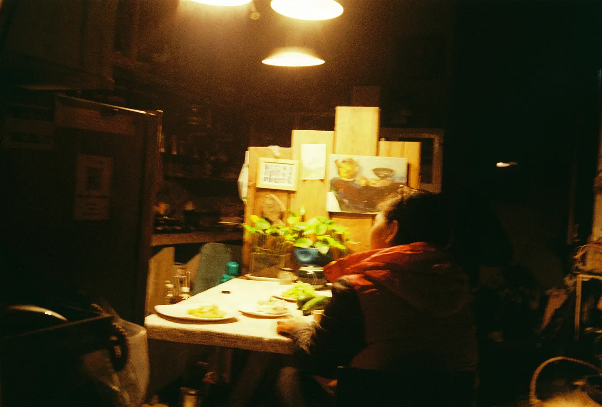Following our pleasant meal and conversation, Mrs. Nam, the lady from Hanoi, and I exchanged phone numbers, paving the way for future meet-ups and recommendations. We captured some photographs to commemorate the occasion, bid our farewells with warm regards, and I resumed my journey in Da Lat, carrying with me the cherished memories of our encounter.
Nature
The nature in Da Lat is indeed quite complex. It has the capacity to be peaceful and tranquil, yet also exhibit a more aggressive and dynamic side, often all at the same time.
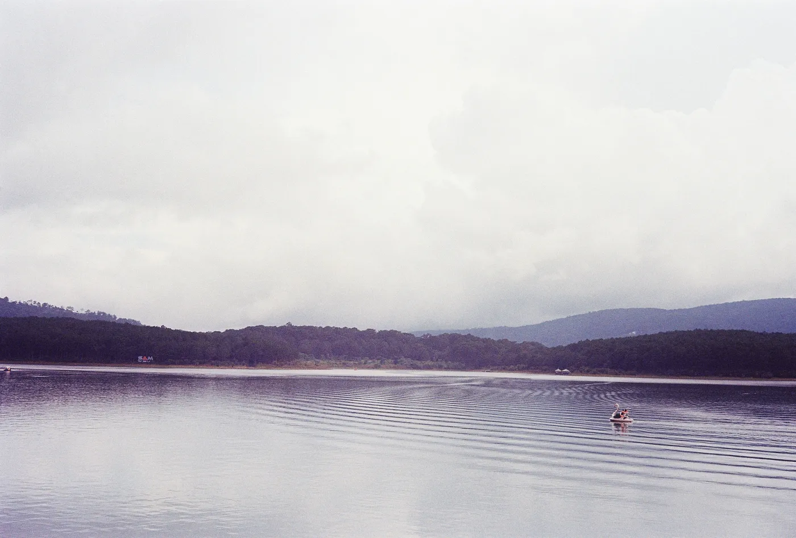This is Tuyen Lam Lake. On a rainy day, it exuded a serene and tranquil beauty. I parked my scooter near the lake, and despite the rain, I ventured out, using any available means to shield my camera from getting wet, and I began capturing the scene. The breathtaking scenery left me with a longing for lower film prices, as I wished I could purchase more film rolls to capture even more of the mesmerizing views.
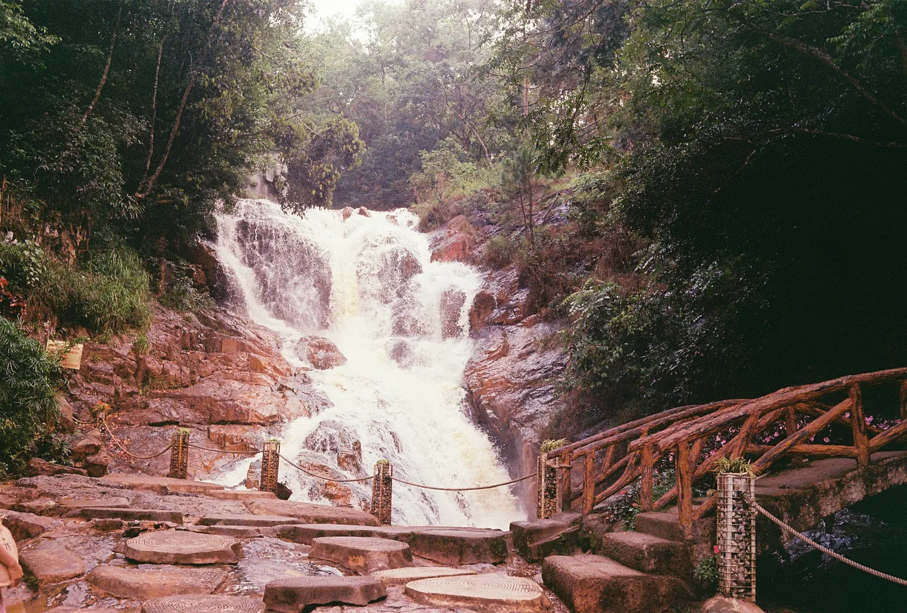Continuing on my journey, I made my way to Datanla Waterfall. The waterfall was remarkably powerful, with droplets that could have potentially damaged my camera if I had ventured too close. As a precaution, I stepped back to a safe distance, ensuring that no droplets could reach my camera. From this vantage point, I captured a shot that became a cherished addition to my collection of memories from the trip.
Cafés
During my visit to Da Lat, I had the pleasure of exploring three renowned vintage cafés in the city. However, I decided to capture photographs at only two of them, as I wanted to conserve my film for future opportunities and experiences.
Duong
Upon arriving at this café, my initial impression was one of warmth and comfort. It exuded a cozy atmosphere, with a large bookshelf occupying the garret, adding to its inviting ambiance.
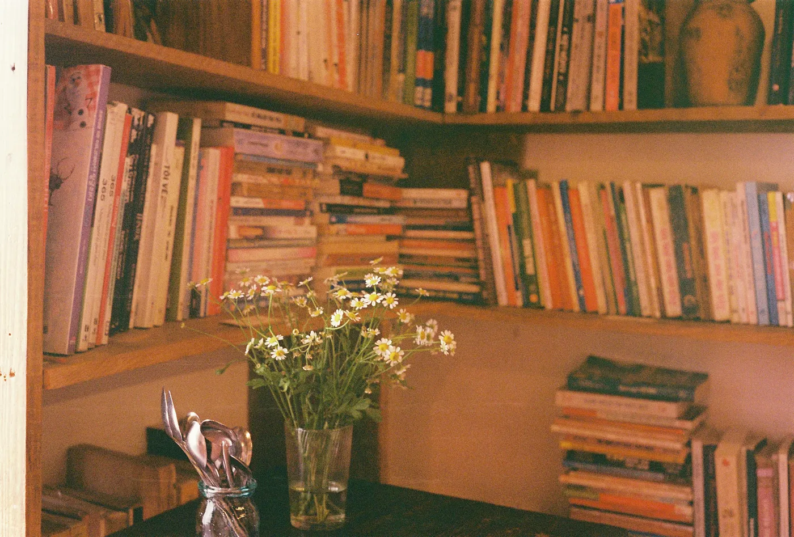I opted for a seasonal ice cream, which was tailored to the flavors of the current season. During that time, plums were in season, so they prepared a delightful plum ice cream for me. While seated in the garret, relishing my ice cream, I took the opportunity to conduct some research on how to transform my photography-focused Instagram into a platform for more profound and insightful content. It was in this very café that I made the momentous decision to start writing blogs about photography and life, marking a significant shift in my creative journey.
Tung
I discovered this vintage café through the movie "Em và Trinh," which tells the life story of the musician known as the "Vietnamese Bob Dylan," Trinh Cong Son. His songs are deeply cherished by the Vietnamese people for their romantic, profound, and at times, melancholic themes.
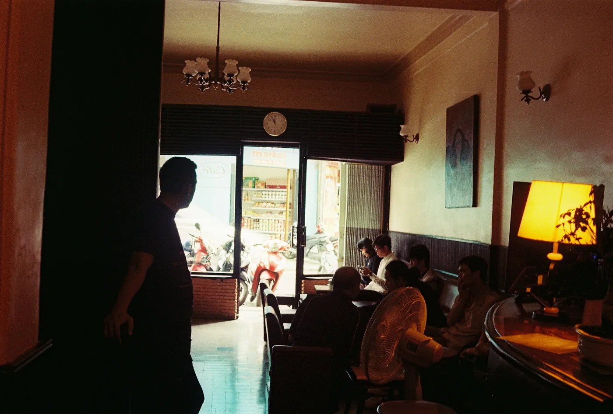Following my viewing of the movie, I delved deeper into the history of the café and was truly fascinated to learn that it was established around 1940. Over the years, it had become a gathering place for artists, where the unique ambiance inspired them to reach their peak of creativity.
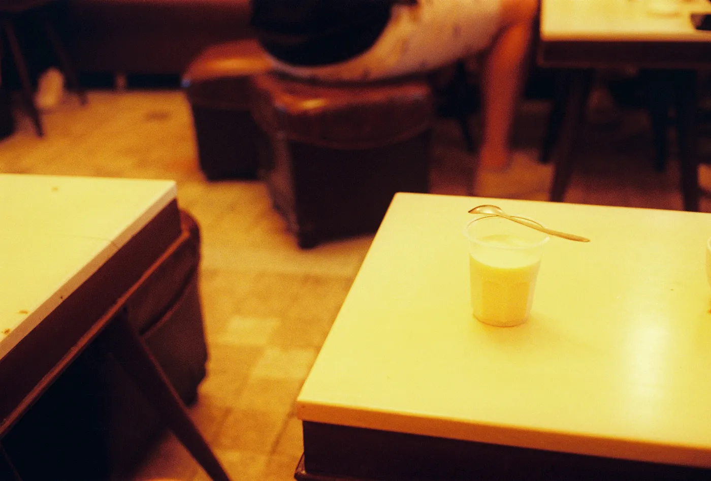Stepping into the café, I could sense an atmosphere that was undoubtedly conducive to artistic inspiration. I decided to order an original yogurt, a specialty that can be quite challenging to find—especially one that is handmade. In Da Lat, it's commonly referred to as "Yao gua," although the name for this yogurt can vary significantly from place to place in Vietnam. In Hanoi, for instance, we use a completely different Vietnamese name for it.
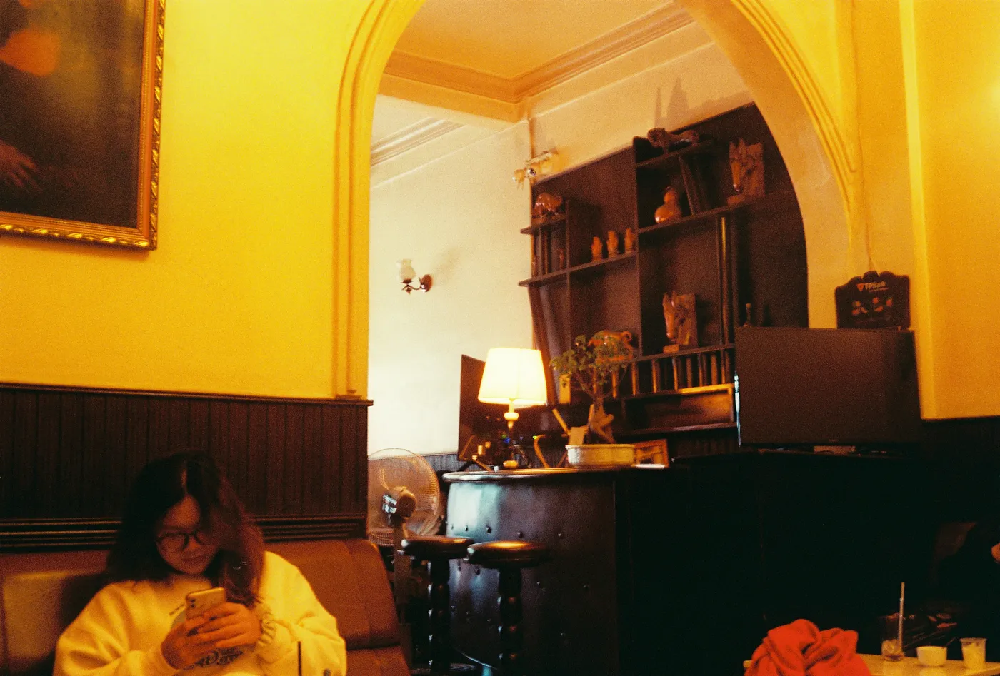As I savored my "Yao gua," the café played some timeless Andy Williams songs, including classics like "Love Story" and "Speak Softly, Love." These good old songs, with their simplicity and elegance, added to the overall charm of the experience.
Restaurants
During my time in Da Lat, I dined at numerous restaurants, each offering its own unique culinary experience. However, I only managed to capture photographs at one of them due to the common constraint of limited film availability. The scarcity of film can indeed pose a challenge when you want to document every memorable dining experience.
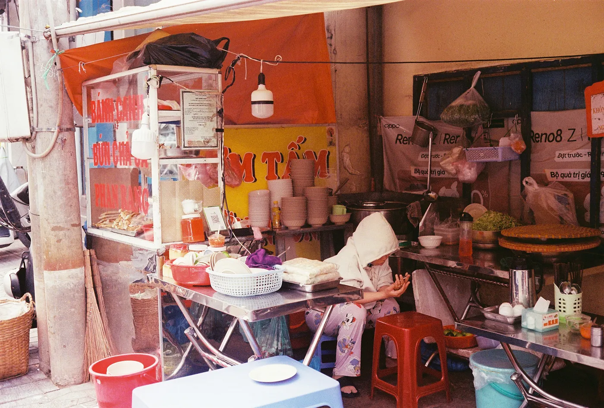I sampled Banh Canh, a dish consisting of noodles with fish sausage, fried onions, and fresh vegetables. Unfortunately, it didn't quite meet my taste preferences, as it was both too spicy and not very tasty.
When it came to the other restaurants, some served dishes with excessive protein (heavy on the meat), while others were overly fatty. As a result, none of these dining experiences left a lasting impression on me, with the exception of Mrs. Nam's kitchen, which stood out for its unique and memorable offerings.
Local Market
The market in Da Lat is undeniably intriguing. It consistently draws large crowds, particularly at night, which often leads to traffic congestion in the vicinity. During my visit, I chose not to make any purchases. Instead, I simply wandered around, taking in the market from my own perspective and savoring the vibrant atmosphere it offered.
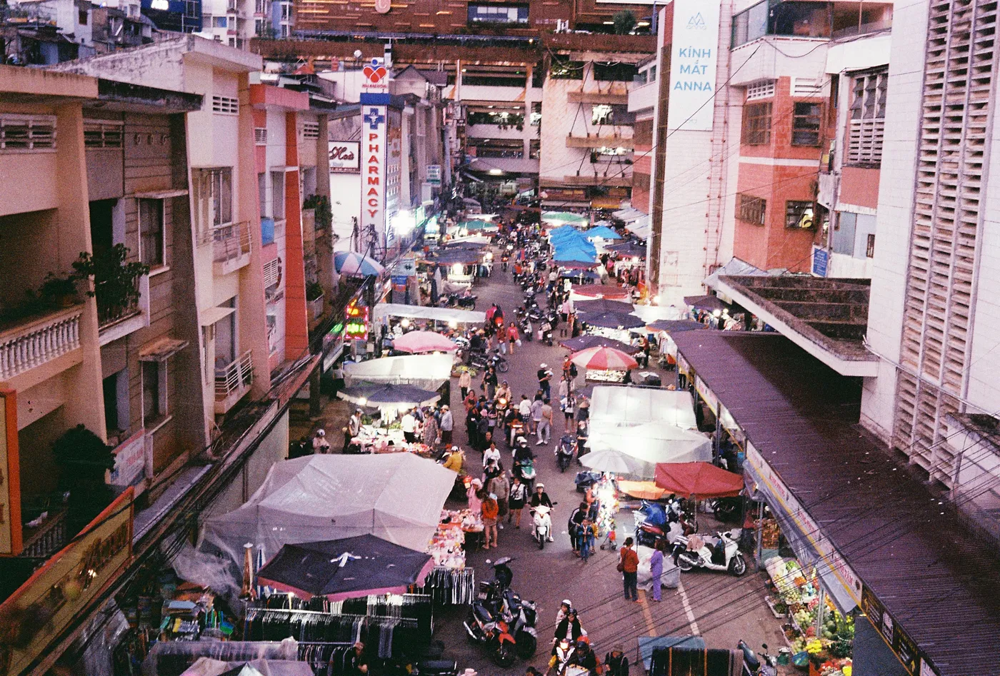I came across a renowned location known as the "Hong Kong spot," a favorite among teenagers and young people for taking selfies, as the backdrop resembles Hong Kong in the 1990s. Finding my way to this spot proved to be quite a challenge, involving numerous staircases and occasional moments of getting stuck and having to retrace my steps. However, after persevering, I finally reached the spot, and it was certainly worth the effort.
Lacking models for my photos, I decided to change my perspective. Instead of capturing images straight ahead, I angled my camera downward, focusing on the lively street below. It was bustling with activity, and I seized the opportunity to capture the vibrant atmosphere.
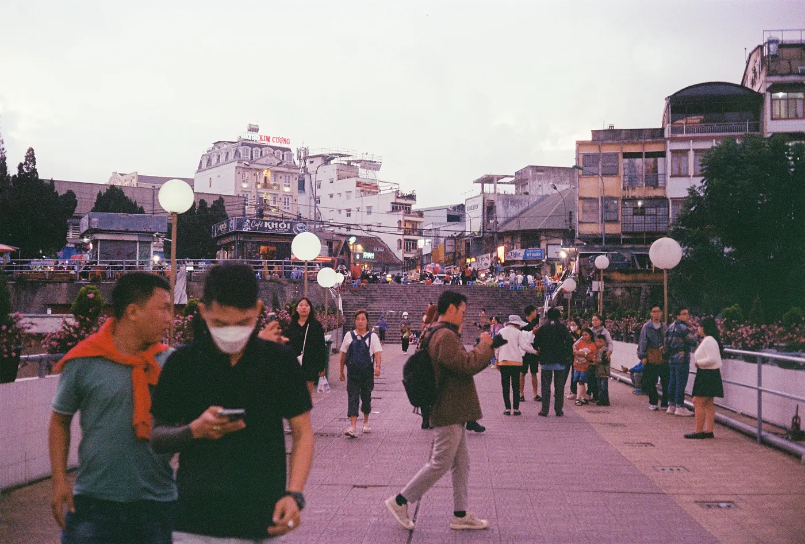I proceeded to take photos of the people around me, drawing inspiration from Joel Meyerowitz's style. The subjects varied—some individuals simply walked by, some paused to take a photograph, and others not only stopped but engaged in conversation with each other. It was a diverse and dynamic mix of people, each contributing to the unique atmosphere of the moment.
Wrap-up
In conclusion, I developed a deep affection for Da Lat. Its cold yet comfortable weather, warm and lovely people, and breathtaking scenery left a lasting impression on me. I can confidently say that I will return to Da Lat one day to relive these beautiful memories, which have had a positive impact on my overall well-being. Until next time, Da Lat!